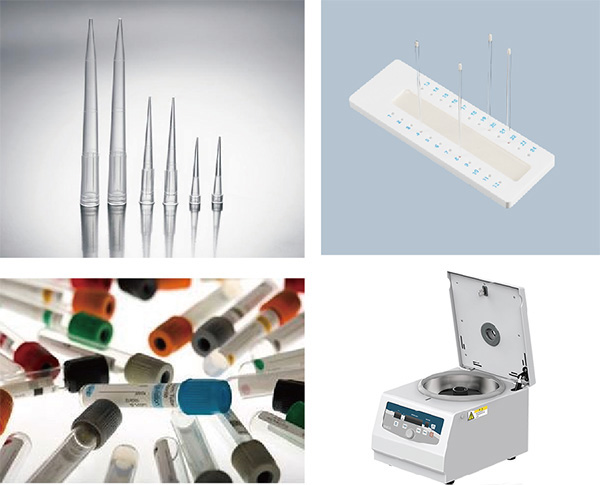
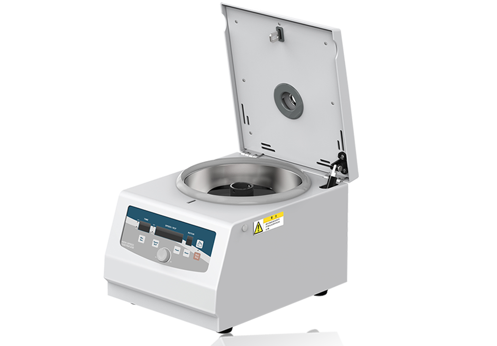
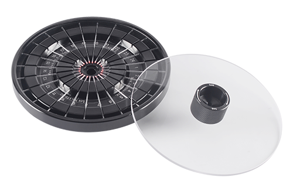
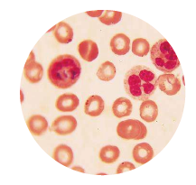

全国统一热线：86-021-57516069

M15G高速离心机在毛细管超速离心机技术上应用
原理
根据细胞的密度差和沉降速度差进行分离，由于新鲜细胞和陈旧细胞的核质比有一定的差异，最终导致细胞的密度有所不同，通过超速离心使不同密度的细胞进行层次分离，从而达到分离新、旧细胞的目的。
应用
有效分离患者自身细胞和新近输入的献血员细胞，大大方便了大量输血后患者红细胞血型的准确定型和临床输血不良的回顾性调查。
对于新发的白血病患者可以白血病发病后细胞和发病前细胞进行分离，然后再分别进行血型定型，从而推测出患者患病前的准确血型。
患者直抗混合凝集应用
同种抗体所结合的是供血者红细胞，在病人发生免疫性溶血期间，输入的供血者红细胞其平均年龄一般比受血者的红细胞为大。
通过分离，结合有抗体的供血者红细胞大多沉至底层，由此显示DAT 阳性程度的较大差别
材料

· 微量红细胞比积管
· 砂轮
· 封口设备：优质橡皮泥
· 一次性塑料吸管或Tip头
· （加样枪）
· EDTA抗凝的全血标本
M15G高速离心机示意图

操作方法
将白膜层红细胞用生理盐水洗涤三次，最后一次1000×g离心5min，在不破坏白膜层的情况下，尽可能的去掉上清。
将洗涤后的白膜层红细胞吸出后混合，加入1-2根比积管中，留出5mm长度封口用。
从血液加入端用橡皮泥将管底封死，挤出的血液用纱布吸走。
放入有编号（记录编号与患者对应）的离心槽中，注意平衡，拧紧内盖，关上离心机外盖10000r/min，离心15-20min。
在距红细胞柱顶（近心端）3mm处，切开比积管（或在另一端用橡皮泥挤出约3mm血液），将此段红细胞洗入盐水管中三洗。
三洗后的红细胞配制成1%（微柱法）或3%（试管法），进行抗原鉴定。
注意事项
分离输血后3天以上的标本较好分离
在24小时分离的年轻红细胞中仍存在供血者的红细胞。
在48小时，除非短时内输了大量血液，一般供血者的血型抗原可在分离的年轻红细胞群中消失。
输血后短时内分离出自身红细胞是可能的。
只对产生正常数量的网织红患者有效
对不能产生正常网织红细胞输出血患者无效，典型再生障碍性贫血的输血患者无效。
网织红细胞减少表示骨髓造血功能减低，常见于再障、骨髓病性贫血。
在衰老的网织红细胞某些抗原表达减弱
一些抗原不能很强的表现出来，尤其在检测E、e、c、Fy 、Jk 和Ge抗原时特别注意；
网织红细胞上D抗原位点数约为成熟红细胞的60%。
尽量避免破坏白膜层
红细胞寿命约为120天。一般而言，进入血循环中的红细胞成为熟红细胞，但也有一定比例的网织红细胞。
网织红细胞数量越多，其群体细胞的平均年龄越轻，反之则老。
尽量避免取到白细胞

· 白细胞直径7~20μm左右
· 红细胞7μm左右
· 过多白细胞造成假阳性

 在线客服
在线客服